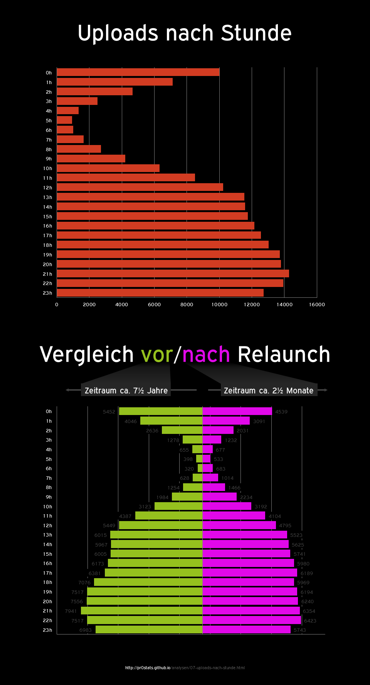

Uploads nach Stunde am Tag
auf pr0gramm

Annahmen
Methodik
- siehe Hinweise zur Methodik
- Zeitraum
01/2007 bis 07/2014
SELECT HOUR(FROM_UNIXTIME(`created`)) AS `hour`, COUNT(*) AS `amount` FROM `stats` GROUP BY `hour` ASCSELECT HOUR(FROM_UNIXTIME(`created`)) AS `hour`, COUNT(*) AS `amount` FROM `stats` WHERE FROM_UNIXTIME(`created`) < '2014-05-03 14:59:00' GROUP BY `hour` ASCSELECT HOUR(FROM_UNIXTIME(`created`)) AS `hour`, COUNT(*) AS `amount` FROM `stats` WHERE FROM_UNIXTIME(`created`) >= '2014-05-03 14:59:00' GROUP BY `hour` ASC